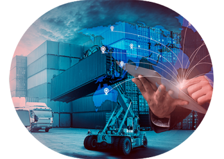

<section id="w2j__know-us">
  <div class="w2j__know-us-container col-lg-12 pl-0 pr-0">
    
    <aside
      class="w2j__know-us-text w2j__text-right col-md-6 col-sm-12"
      tabindex="0"
    >
      A W2J Comércio Internacional nasceu com objetivo de reduzir custos de suas
      importações, estudando o assunto descobriu uma forma ética, segura e
      eficiente de realizar operações de importação. E porque não estender tais
      conhecimento ao mercado Nacional, proporcionando benefícios de redução de
      custos e ampliando a fatia no mercado. Resolveu então oferecer e
      compartilhar com o comércio internacional.
    </aside>
  </div>

  <div class="w2j__know-us-container w2j__under-box col-lg-12 pl-0 pr-0">
    <aside
      class="w2j__know-us-text w2j__text-left col-md-6 col-sm-12 pr-0"
      tabindex="0"
    >
      Na importação, os custos de impostos, taxas e despesas aduaneiras são
      muito altos, principalmente o ICMS que é o maior custo da cadeia. O que
      podemos e faremos é reduzir este e os demais custos. Quer saber como?
      Entre em contato conosco e você vai se surpreender quando receber a
      planilha comparativa com sua última importação.
    </aside>
    
  </div>
</section>
